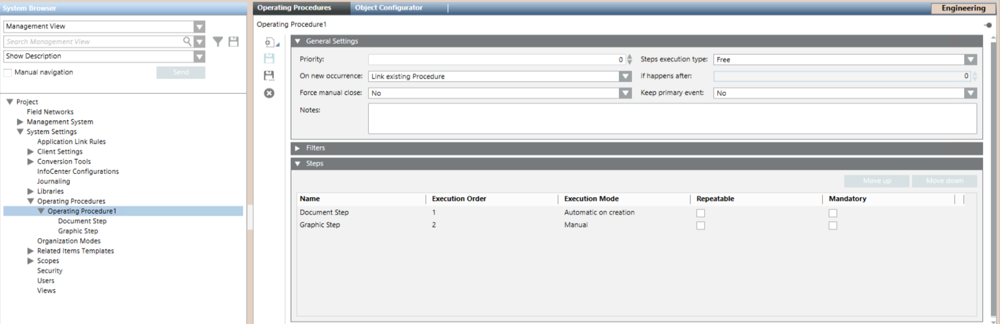

Configure a Video Step
This procedure is part of the workflow for integrating video surveillance.
Prerequisites
- You configured an operating procedure, to which you now want to add a video step.
Add a Video Step to the Operating Procedure
Skip this section if you want to modify an existing video step.
- Select Project > System Settings > Operating Procedures > […] > [operating procedure].
- In the Operating Procedures tab, click New
 , and select New Step Video.
, and select New Step Video. - In the New Object dialog box, enter a name and description, for example, Video Step.
- Click OK.
- The new video step displays under the operating procedure in System Browser, and is added to the Steps expander in the Operating Procedures tab.

Configure How the Video Step will Execute
- Select Project > System Settings > Operating Procedures > […] > [operating procedure] > [video step].
- In the Operating Procedures tab, open the General Settings expander.
- Configure the Execution Mode of the step:
- Manual: Choose this if you only need to display live video when the operator clicks on the step. No video recordings are created.
- Automatic on creation: Choose this if you need to display both live and recorded video during the video step. Supports creation of recordings concurrent with the triggering event.
- Automatic on first treatment: This option has the same effect as Automatic on creation.
NOTE: The live and recorded video referred to here will be from the cameras configured in the next section, see below. The triggering event is the one that causes the operating procedure to execute, defined in the filters of the operating procedure. - Configure if the video step is Mandatory: Set Yes to force operators to execute and check off the step, which may be required in manual execution mode.
- Configure if the video step is Repeatable: Set Yes to allow operators to check live video again after they execute and check off the step.
- Click Save
 .
.
Define the Cameras Displayed During the Video Step
Here you configure the cameras that will display live/recorded video when the video step is executed. For a detailed reference on these configuration fields see Video Step in Assisted Treatment.
- Select Project > System Settings > Operating Procedures > […] > [operating procedure] > [video step].
- In the Operating Procedures tab, open the Cameras expander.
- Any cameras already configured in the video step display here.
- In Automatic camera position, define how you want cameras to populate the monitor layout:
- Check box set: The system dynamically allocates cameras to consecutive monitor positions. The specific position of any camera may vary, based on how many related items cameras there are.
- Check box cleared: You want to assign each camera, including the related items ones, to a specific fixed position in the monitor layout.
- To add a specific camera to the list, from System Browser, drag it into the Camera column. This creates a new row labeled with the camera name.
- To add related items cameras to the list, click New. Depending on the Automatic camera position setting, this creates a new row labeled:
- All cameras from related items: Adds all the related items cameras to the monitor layout. Any settings on this row (Mode, and so on) will apply to all the related items cameras.
- Camera from related item: Adds a single related items camera to the layout. Each time you create a row like this, the next available related items camera is added. You can individually specify the position and other settings (Mode, and so on) for each camera.
- To rearrange the cameras in the list:
- If Automatic camera position is cleared, you can edit the Position field to specify the fixed position in the layout for each camera. Do not assign the same position to multiple cameras, and make sure there are enough monitors in the layout for all the positions you set.
- If Automatic camera position is set, you can use Move Up and Move Down to change the relative positions of the rows. The monitors in the layout are populated starting from the top row. Any row with "all cameras from related items" will populate a number of consecutive monitors equal to the number of related cameras.
- To remove a row from the list, select it and click Delete.
- To set a camera to display live video:
a. Set the Mode field of the camera to Live.
b. (Optional, available only for automatic steps). If you additionally want to create a recording from this same camera, configure the Pre-Trigger and Post-Trigger fields, to set the duration of the recording. - When the video step executes, it will display the current live video stream from this camera. If the Pre-Trigger and Post-Trigger fields were also configured, a recording made at the time of the event will also be stored—but not displayed. To also display this recording in the video step, configure the same camera again in a separate row, but set it to Replay (see step 9 below).
- To set a camera to play back recorded video:
a. Set the Mode field of the camera to Replay.
b. In the Pre-Trigger and Post-Trigger fields, set the span of time around the event to play back. - When the video step executes, it will play back the video recorded by this camera for the specified duration around the triggering event.
NOTE: On Flex Client stations, the replay is not available. Instead, you will always see the live video on the selected camera.
NOTE: For steps with Manual execution mode, the replay will work only if the video camera is configured for continuous recording.
NOTE: For steps with Automatic execution mode, if the same camera was also configured to make a recording while displaying Live (see step 8b above), the recording duration is determined by those settings. Otherwise the recording duration is determined by the playback duration set here. - Select the Disconnect cameras from monitors check box to stop showing the above-configured video streams when the assisted treatment is closed. This ensures "old" video streams do not persist in the next operating procedure with video. For more information see Disconnect Cameras from Monitors.
- Only for distributed configurations with multiple Desigo CC servers: In the Execution System drop-down list select the Desigo CC system that will execute the video commands, for example, recording and tagging.
- Click Save .